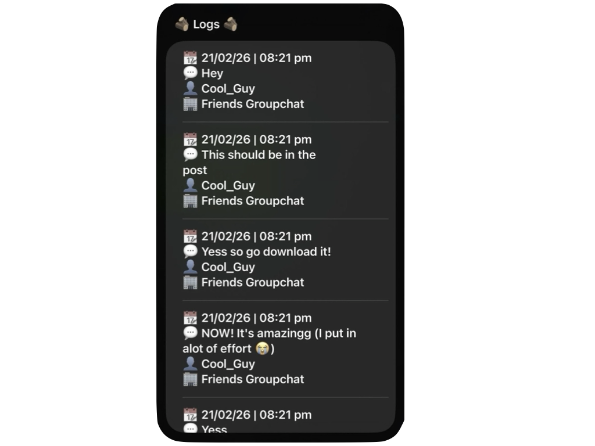

iMessage Logger
Damn it, your friend, group chat, mum just unsent a message? No problem, just run this shortcut to check the instantly saved* messages.
About
What it is and why it exists
iMessage Logger is a Shortcuts-powered archiving tool that captures your conversations as clean, readable logs stored entirely on your device with no cloud required.
Built for anyone who doesn't want to overthink the message they weren't supposed to see. Set it up once, and never worry again. Times, dates, contacts and group chats are all saved.
Preview

Requirements
What you'll need
- iOS, MacOS or WatchOS
- Apple Shortcuts app (pre-installed)